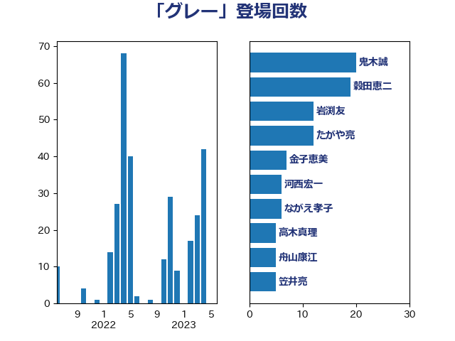

単語「グレー」

| 鬼木誠 | 立憲民主党 | 20 回 |
| 穀田恵二 | 日本共産党 | 19 回 |
| 岩渕友 | 日本共産党 | 12 回 |
| たがや亮 | れいわ新選組 | 12 回 |
| 金子恵美 | 立憲民主党 | 7 回 |
| 河西宏一 | 公明党 | 6 回 |
| ながえ孝子 | 無所属 | 6 回 |
| 高木真理 | 立憲民主党 | 5 回 |
| 舟山康江 | 国民民主党 | 5 回 |
| 笠井亮 | 日本共産党 | 5 回 |
| 田名部匡代 | 立憲民主党 | 5 回 |
| 寺田学 | 立憲民主党 | 5 回 |
| 宮口治子 | 立憲民主党 | 5 回 |
| 古賀友一郎 | 自由民主党 | 5 回 |
| 礒崎哲史 | 国民民主党 | 4 回 |
| 浜田靖一 | 自由民主党 | 4 回 |
| 森本真治 | 立憲民主党 | 4 回 |
| 梅村聡 | 日本維新の会 | 4 回 |
| 岸田文雄 | 自由民主党 | 4 回 |
| 三上えり | 立憲民主党 | 4 回 |
| 野村哲郎 | 自由民主党 | 3 回 |
| 近藤和也 | 立憲民主党 | 3 回 |
| 足立康史 | 日本維新の会 | 3 回 |
| 舩後靖彦 | れいわ新選組 | 3 回 |
| 小沼巧 | 立憲民主党 | 3 回 |
| 伊藤岳 | 日本共産党 | 3 回 |
| 伊藤俊輔 | 立憲民主党 | 3 回 |
| 阿部知子 | 立憲民主党 | 2 回 |
| 赤池誠章 | 自由民主党 | 2 回 |
| 落合貴之 | 立憲民主党 | 2 回 |
| 池下卓 | 日本維新の会 | 2 回 |
| 森屋隆 | 立憲民主党 | 2 回 |
| 川合孝典 | 国民民主党 | 2 回 |
| 山井和則 | 立憲民主党 | 2 回 |
| 小林鷹之 | 自由民主党 | 2 回 |
| 小倉將信 | 自由民主党 | 2 回 |
| 塩村あやか | 立憲民主党 | 2 回 |
| 北側一雄 | 公明党 | 2 回 |
| 井坂信彦 | 立憲民主党 | 2 回 |
| 高橋千鶴子 | 日本共産党 | 1 回 |
| 高橋光男 | 公明党 | 1 回 |
| 青柳陽一郎 | 立憲民主党 | 1 回 |
| 階猛 | 立憲民主党 | 1 回 |
| 長島昭久 | 自由民主党 | 1 回 |
| 鈴木英敬 | 自由民主党 | 1 回 |
| 金村龍那 | 日本維新の会 | 1 回 |
| 里見隆治 | 公明党 | 1 回 |
| 藤田文武 | 日本維新の会 | 1 回 |
| 福田昭夫 | 立憲民主党 | 1 回 |
| 磯崎仁彦 | 自由民主党 | 1 回 |
| 田中健 | 国民民主党 | 1 回 |
| 浦野靖人 | 日本維新の会 | 1 回 |
| 浜口誠 | 国民民主党 | 1 回 |
| 浅野哲 | 国民民主党 | 1 回 |
| 浅田均 | 日本維新の会 | 1 回 |
| 櫛渕万里 | れいわ新選組 | 1 回 |
| 森山浩行 | 立憲民主党 | 1 回 |
| 梶山弘志 | 自由民主党 | 1 回 |
| 枝野幸男 | 立憲民主党 | 1 回 |
| 林芳正 | 自由民主党 | 1 回 |
| 村田享子 | 立憲民主党 | 1 回 |
| 杉本和巳 | 日本維新の会 | 1 回 |
| 本田顕子 | 自由民主党 | 1 回 |
| 本村伸子 | 日本共産党 | 1 回 |
| 広瀬めぐみ | 自由民主党 | 1 回 |
| 山田宏 | 自由民主党 | 1 回 |
| 山本剛正 | 日本維新の会 | 1 回 |
| 小熊慎司 | 立憲民主党 | 1 回 |
| 小泉進次郎 | 自由民主党 | 1 回 |
| 小宮山泰子 | 立憲民主党 | 1 回 |
| 寺田静 | 無所属 | 1 回 |
| 宮本岳志 | 日本共産党 | 1 回 |
| 安江伸夫 | 公明党 | 1 回 |
| 大塚耕平 | 国民民主党 | 1 回 |
| 塩川鉄也 | 日本共産党 | 1 回 |
| 和田有一朗 | 日本維新の会 | 1 回 |
| 佐藤啓 | 自由民主党 | 1 回 |
| 井野俊郎 | 自由民主党 | 1 回 |
| 中野洋昌 | 公明党 | 1 回 |
| 中島克仁 | 立憲民主党 | 1 回 |
| 上月良祐 | 自由民主党 | 1 回 |
| 三木圭恵 | 日本維新の会 | 1 回 |